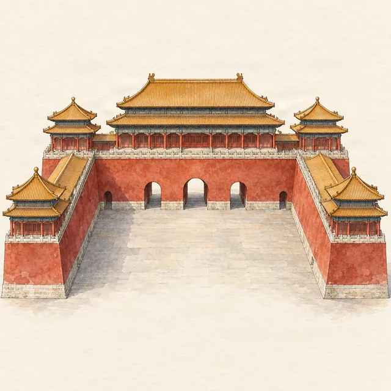

Forbidden City · tickets
Forbidden City tickets for foreigners
Last checked:

How do foreigners book Forbidden City tickets?
Book online with your passport number: tickets go on sale at 20:00 Beijing time, seven days before the visit, cost ¥60 from April to October and ¥40 from November to March, and are not sold at the gate. Your passport is your ticket; you show it at the Meridian Gate.
Where do I book?
- The Palace Museum's English booking site, bookingticket.dpm.org.cn, which takes international cards. The Chinese site is ticket.dpm.org.cn.
- The museum's official WeChat mini program, 故宫博物院, if you already use WeChat.
The museum says it has not authorised any third-party ticket agents. Tour companies that include tickets book them in your name with your passport details, so give your passport number only to a company you trust.
How much are Forbidden City tickets?
| Ticket | Price |
|---|---|
| Adult, 1 April – 31 October | ¥60 |
| Adult, 1 November – 31 March | ¥40 |
| Students aged 18 and over, in undergraduate study or below, with proof | ¥20 |
| Visitors aged 60 and over | ¥30 (April–October) or ¥20 (November–March) |
| Treasure Gallery or Clock Gallery, each | ¥10 |
Free entry for under-18s applies to Chinese citizens and foreign permanent residents; check the price for other children when you book. Children under 14 must come with an adult, up to three per adult. ¥60 is about US$8.
What do I need to book?
- The passport each visitor will carry. One ticket per passport per day, and a ticket cannot be moved to another person, date or session.
- A morning or afternoon session. Morning tickets check in by 12:00; afternoon tickets from 11:00.
- A way to pay: the English booking site accepts international cards.
What happens at the gate?
Go to the Meridian Gate, the only visitor entrance, on the south side. The nearest metro stations are Tian'anmen East and Tian'anmen West on Line 1; see entrance and exits for the walk. Show the original passport you booked with, not a photo or copy, and expect a security check. You leave by the Gate of Divine Might (north) or the East Glorious Gate (east), not by the Meridian Gate.
When is the Forbidden City open?
- 1 April – 31 October: 08:30–17:00, last entry 16:00.
- 1 November – 31 March: 08:30–16:30, last entry 15:30.
- Closed on Mondays, except public holidays.
What if tickets are sold out?
- Be online at 20:00 Beijing time seven days ahead; weekend and holiday dates go first, especially during the Chinese national holidays in early May and early October.
- Check again the evening before: visitors can cancel until midnight before their visit.
- Choose a weekday or an afternoon session.
- If the palace is full, Jingshan Park shows you the whole palace from above.
Can I cancel?
Yes, through the channel you booked with, until midnight before your visit. Later cancellations and no-shows count as missed visits: three in 180 days and you cannot book for 60 days.
What is there to see once I am in?
Plan 3–4 hours. Our half-day route follows the central axis from the Meridian Gate to the Gate of Divine Might, with the stops worth slowing down for. Penyola has the route on a hand-drawn map with audio stories, and the ticket notes, hours and a Chinese address card for your taxi, all offline.
More planning guides
Sources
Checked on these official pages on 9 November 2026: